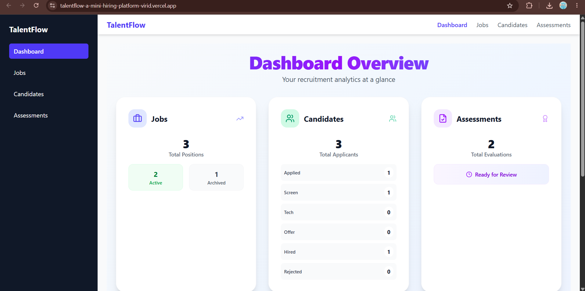

TalentFlow — Mini Hiring Platform
A front-end React app simulating an ATS for HR teams — Jobs, Candidates, and Assessments. Virtualized list handling 1,000+ seeded candidates, drag-and-drop Kanban with optimistic updates, a job-specific assessment builder with conditional questions, and a simulated REST API (MSW) with injected latency and error rates, persisted locally via IndexedDB.
React
Redux Toolkit
React Query
Dexie.js
Tailwind